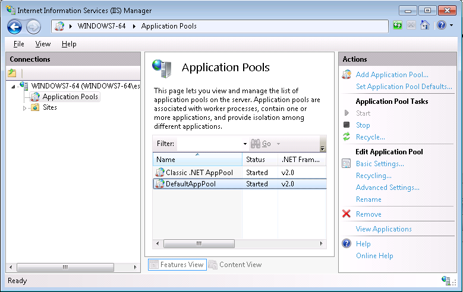

Concept
The following errors might occur at runtime when using EasyXLS Excel library for ASP classic and VBScript:
Microsoft VBScript runtime error '800a01ad'
ActiveX component can't create object
at line:
Server.CreateObject("EasyXLS.ExcelDocument")
Possible reason #1: Windows 64-bit, IIS Server and EasyXLS.dll for 64-bit
If the EasyXLS version for 64-bit is used on a Windows 64-bit operating system, make sure that IIS allows running of
64-bit applications.
Open Internet Information Services (IIS) Manager in Control Panel/Administrative Tools. Select Application Pools and
the application pool associated with your web application.

Select Advanced Settings and check if Enable 32-bit Application option is set to false.

Possible reason #2: Windows 64-bit, IIS Server and EasyXLS.dll for 32-bit
If the EasyXLS version for 32-bit is used on a Windows 64-bit operating system, make sure that IIS allows running of
32-bit applications.
Open Internet Information Services (IIS) Manager on Control Panel/Administrative Tools. Select Application Pools and
the application pool associated with your web application.
Select Advanced Settings and check if Enable 32-bit Application option is set to true.

Possible reason #3: Another EasyXLS.dll previously registered and IIS Server
If another version of EasyXLS.dll was registered, by installer or manually using regsvcs command, IIS Server must be
restarted.
It is recommended to delete EasyXLS from Component Services, before registering another EasyXLS.dll. By uninstalling
EasyXLS, EasyXLS component is deleted from Component Services by default. See How to register EasyXLS for details
about opening Component Services and how to manually register EasyXLS.dll.
Possible reason #4: Windows 64-bit, web server or VBScript application running on 64-bit and EasyXLS.dll for 32-bit
If the EasyXLS version for 32-bit is used on a Windows 64-bit operating system, make sure that the application that
runs EasyXLS code allows running of 32-bit applications. If not, install EasyXLS version on 64-bit.
Possible reason #5: Windows 64-bit, web server or VBScript application running on 32-bit and EasyXLS.dll for 64-bit
If the EasyXLS version for 64-bit is used on a Windows 64-bit operating system, make sure that the application that
runs EasyXLS code allows running of 64-bit applications. If not, install EasyXLS version on 32-bit.
Contact us for any other reasons
If none of the above, contact us at support@easyxls.com with details about your application configuration and the full
error message.
|